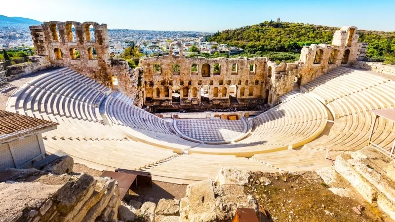
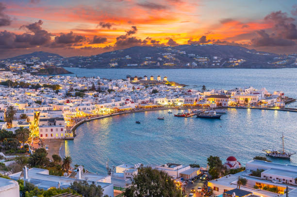

O que visitar
- Atenas: Acrópole, Partenon e museus históricos.
- Santorini: vilas brancas, pôr do sol e praias únicas.
- Mykonos: vida noturna vibrante e paisagens pitorescas.



Links para mais informações
Dicas para viajar
- Alugue um carro para explorar ilhas menores com liberdade.
- Prove pratos locais como moussaka, souvlaki e azeite grego.
- Leve roupas leves e protetor solar nos passeios diurnos.